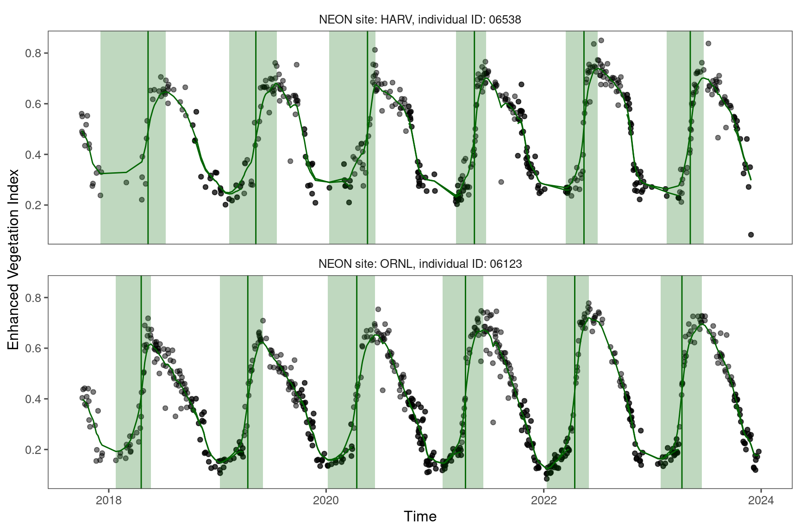
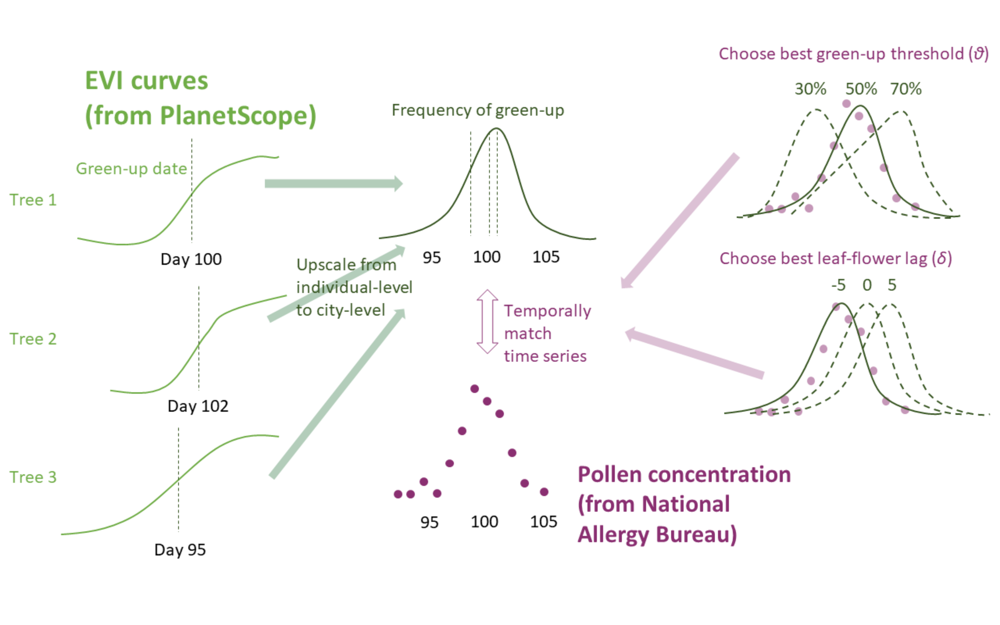

if (!requireNamespace("pacman", quietly = TRUE)) install.packages("pacman")
if (!requireNamespace("devtools", quietly = TRUE)) install.packages("devtools")
# List of required packages
required_packages <- c(
"broom", "cowplot", "doSNOW", "dotenv", "foreach", "geosphere", "ggpubr", "ggrepel", "ggspatial", "ggthemes", "imputeTS", "knitr", "lmerTest", "lubridate", "magick", "mclust", "parallel", "patchwork", "ptw", "rnpn", "rsconnect", "scales", "sf", "shiny", "taxize", "terra", "tidyverse"
)
# Identify missing packages
missing_packages <- setdiff(required_packages, rownames(installed.packages()))
# Install if there are missing packages
if (length(missing_packages) > 0) {
pacman::p_install(missing_packages)
} else {
message("All required packages are already installed. Skipping installation.")
}
# Check and install tidynab from GitHub
if (!requireNamespace("tidynab", quietly = TRUE)) {
devtools::install_github("zhulabgroup/tidynab")
}
pacman::p_load("tidyverse")
pacman::p_load("sf")
pacman::p_load("parallel")
pacman::p_load("doSNOW")
pacman::p_load("patchwork")
source("../code/util_whit.R")
source("../code/util_extend_ts.R")Predicting reproductive phenology of wind-pollinated trees via PlanetScope time series
Preparation
Check and install packages.
.path <- list(
input = "../data/input/",
intermediate = "../data/intermediate/",
output = "../data/output/"
)
.full_data <- F # Set this to false to reproduce the analysis with intermediate data files. Some raw files are not available due to size and confidentiality reasons.
.fig_save <- TTaxa of interest are based on 1) Lo et al.,2019 (Description and allergenic potential of 11 most important pollen taxa in the CUSSC region ranked by percent abundance relative to the sum of all pollen taxa over 31 NAB stations that meet inclusion criteria, 2003–2017) and 2) Crimmins et al., 2023. Spring- and fall-flowering elms are treated separately as suggested by Allison and Yingxiao.
v_taxa <- c("Acer", "Alnus", "Betula", "Carya", "Celtis", "Fraxinus", "Juglans", "Liquidambar", "Morus", "Platanus", "Populus", "Quercus", "Salix", "Ulmus early", "Ulmus late")
v_taxa_short <- str_split(v_taxa, pattern = " ", simplify = T)[, 1]Focus on the life cycles from 2018 to 2022, spanning 2017 and 2023. This is because of the availability of PlanetScope data.
v_year <- 2018:2022Tree-level flowering phenology
PlanetScope-derived vegetative phenology correlates with flowering phenology derived from NEON.
Data
Read NEON phenometrics data prepared in the phenology-sample-data project.
source("../code/neon_data_pheno.R")
p_neon_mapRead in NEON PlanetScope data (day of year) prepared with our own batchplanet package.
source("../code/neon_data_ps.R")
source("../code/neon_plot_data.R")
p_neon_data
Analysis
Correlation between 50% green-up time from PlanetScope and flower onset time from NEON.
source("../code/neon_corr.R")
p_neon_ps_corr_flowerCorrelation between leaf and flower onset time from NEON.
source("../code/neon_leaf_flower.R")
p_neon_leaf_flowerCity-level pollen phenology

NAB data
NAB data were used to calibrate and validate city-level pollen phenology.
We processed NAB data using our own tidynab package. The raw data will not be released.
source("../code/data_nab_read.R")Focus on seven major cities in CONUS with pollen count data and street tree inventory.
Exceptions: Denver pollen data are from Colorado Springs; Austin pollen data are from Georgetown; Detroit pollen data are from Sylvania.
v_site <- v_site_tune <- c("NY", "AT", "ST", "HT", "TP", "DT", "DV")
v_site_name <- c("New York", "Austin", "Seattle", "Houston", "Tampa", "Detroit", "Denver")source("../code/data_nab_meta.R")
p_pollen_mapRetrieve climatologies (long-term climate) of these cities from TerraClim.
source("../code/data_terraclim.R")
df_terraclim# A tibble: 7 × 3
site mat tap
<chr> <dbl> <dbl>
1 AT 19.4 842.
2 DV 9.25 424
3 ST 10.9 1011
4 HT 21.3 1249.
5 NY 12.3 1198.
6 DT 10.2 869.
7 TP 22.6 1298 source("../code/data_nab_avail.R")
p_nab_availView pollen phenology in study sites.
source("../code/data_nab_pheno.R")
p_nab_calenEstimate genus-specific pollen seasons by fitting Gaussian kernels.
source("../code/data_nab_window.R")
p_flower_windowNPN data
NPN data were used in addition to NAB data to validate city-level pollen phenology.
Download all NPN data for taxa studied.
source("../code/data_npn_down.R")Visualize NPN data and visualize.
source("../code/data_npn_pheno.R")
p_npn_calenStreet tree inventory data
Street tree inventory data from seven cities were compiled to locate pixels of interest for PlanetScope data retrieval.
Read in data previously processed with our own batchplanet package. This dataset will not be released due to confidentiality reasons.
source("../code/data_occ_tree_read.R")Find family names from genus names. This step needs supervision when run for the first time.
source("../code/data_occ_tree_taxa.R")Map relative position of tree inventory and nab station.
source("../code/data_occ_map.R")
p_nab_plant_mapCalculate distance from plants to NAB stations in the unit of km.
source("../code/data_occ_dist.R")
df_distance# A tibble: 7 × 7
site midlon midlat sitelon sitelat sitename distance
<chr> <dbl> <dbl> <dbl> <dbl> <chr> <dbl>
1 AT -97.7 30.3 -97.7 30.6 Austin 40.9
2 DT -83.1 42.4 -83.7 41.7 Detroit 90.7
3 DV -105. 39.7 -105. 38.9 Denver 96.5
4 HT -95.4 29.7 -95.4 29.7 Houston 4.28
5 NY -73.9 40.7 -74.0 40.8 New York 11.1
6 ST -122. 47.6 -122. 47.7 Seattle 7.07
7 TP -82.4 28.1 -82.4 28.1 Tampa 3.65Map plant occurrence in a city with street map as basemap. Street shapefiles for major cities manually downloaded from https://dataverse.harvard.edu/dataset.xhtml?persistentId=doi:10.7910/DVN/CUWWYJ. Boeing, Geoff, 2017, “U.S. Street Network Shapefiles, Node/Edge Lists, and GraphML Files”, https://doi.org/10.7910/DVN/CUWWYJ, Harvard Dataverse, V2
source("../code/data_occ_road_read.R")
source("../code/data_occ_road_map.R")
p_plant_mapPlanetScope data
PlanetScope data were previously processed using our own batchplanet package.
Here we visualize a subset of street trees in Detroit overlayed on a true-color PlanetScope image on May 8, 2017.
source("../code/data_ps_snap.R")
p_ps_snapCharacterize phenology
Set green-up/down thresholds for each taxa.
source("../code/city_prep.R")Read in green-up down day of year previously processed using our own batchplanet package.
source("../code/city_doy.R")Convert into probability density.
source("../code/city_freq.R")Process NAB and NPN data into probability density representing city-level flowering and pollen phenology, respectively. We have hidden the raw NAB data in the output.
source("../code/city_data.R")Tune parameters
Prepare some functions for plotting.
source("../code/city_plot.R")Tune green-up/down threshold and leaf-flower lag with NAB data. Again, we have hidden the raw NAB data in the output.
source("../code/city_tune.R")Visualize predictions
Display results in our Shiny app.
Make some summary plots.
source("../code/city_plot_subset.R")p_comp_1cityp_comp_1taxap_comp_1taxa2cityp_city_corrCross validation
Plot correlation between mean annual temperature (MAT) and lag between green-up/down frequency and pollen count. * A positive lag means leafing phenology leads pollen phenology; a negative lag means leafing phenology lags pollen phenology.
source("../code/city_clim_plot.R")
p_lag_clim- At warmer places, oak pollen tend to precede 50% green-up and vice versa.
Linear regression to check the correlation in each genus.
source("../code/city_clim_reg.R")
p_slopeWe conducted leave-one-out cross validation to test the robustness of the climate-phenology relationship and the effectiveness of using it to infer flowering phenology in new locations. Specifically, we removed a random city from the pollen dataset at a time, matched leafing and pollen phenology in the other cities, and modeled the climate-lag correlation. We predicted the leafing-phenology lag with the linear model and subsequently predicted the flowering phenology from known leafing phenology at the city held for validation. We evaluated the accuracy of our methods by calculating the RMSE between the predicted flowering phenology and standardized pollen count observations at the cities held for validation.
source("../code/city_loocv.R")Evaluate performance
source("../code/city_fit.R")Comparing nRMSE.
p_taxa_nrmsedf_nrmse_summ# A tibble: 2 × 6
method median mean lower upper n
<fct> <dbl> <dbl> <dbl> <dbl> <int>
1 in-sample 0.142 0.159 0.0881 0.336 282
2 out-of-sample 0.145 0.173 0.0982 0.360 33df_nrmse_taxa_summ# A tibble: 15 × 6
taxa median mean lower upper n
<chr> <dbl> <dbl> <dbl> <dbl> <int>
1 Alnus 0.190 0.172 0.107 0.239 13
2 Acer 0.189 0.214 0.100 0.408 23
3 Ulmus early 0.172 0.203 0.111 0.435 28
4 Betula 0.157 0.154 0.0971 0.207 23
5 Salix 0.156 0.156 0.0947 0.242 19
6 Morus 0.144 0.148 0.0832 0.244 22
7 Platanus 0.142 0.147 0.0853 0.241 18
8 Populus 0.141 0.142 0.0972 0.215 23
9 Fraxinus 0.140 0.149 0.0912 0.248 20
10 Juglans 0.140 0.143 0.109 0.204 15
11 Ulmus late 0.136 0.148 0.110 0.204 15
12 Quercus 0.135 0.154 0.0967 0.321 33
13 Carya 0.130 0.135 0.104 0.174 15
14 Celtis 0.124 0.130 0.0993 0.184 10
15 Liquidambar 0.110 0.110 0.0868 0.127 5Comparing Spearman correlation coeffiient.
p_taxa_spearmandf_spearman_summ# A tibble: 2 × 6
method median mean lower upper n
<fct> <dbl> <dbl> <dbl> <dbl> <int>
1 in-sample 0.567 0.544 0.125 0.845 282
2 out-of-sample 0.691 0.679 0.337 0.910 33df_spearman_sig_summ# A tibble: 3 × 3
# Groups: method [2]
method sig n
<fct> <chr> <int>
1 in-sample non-significant 16
2 in-sample significant 266
3 out-of-sample significant 33df_spearman_taxa_summ# A tibble: 15 × 6
taxa median mean lower upper n
<chr> <dbl> <dbl> <dbl> <dbl> <int>
1 Quercus 0.751 0.733 0.491 0.918 33
2 Populus 0.659 0.623 0.220 0.827 23
3 Morus 0.610 0.600 0.432 0.784 22
4 Celtis 0.599 0.580 0.280 0.761 10
5 Ulmus early 0.590 0.542 0.145 0.834 28
6 Carya 0.575 0.590 0.421 0.750 15
7 Betula 0.557 0.537 0.127 0.814 23
8 Fraxinus 0.544 0.534 0.142 0.825 20
9 Ulmus late 0.544 0.477 0.138 0.678 15
10 Liquidambar 0.542 0.492 0.241 0.627 5
11 Acer 0.514 0.479 0.131 0.736 23
12 Alnus 0.500 0.427 -0.0246 0.785 13
13 Salix 0.468 0.430 0.0784 0.708 19
14 Platanus 0.460 0.460 0.125 0.719 18
15 Juglans 0.454 0.423 0.260 0.531 15Validate with NPN instead of NAB.
p_taxa_spearman_npndf_spearman_npn_summ# A tibble: 2 × 6
method median mean lower upper n
<fct> <dbl> <dbl> <dbl> <dbl> <int>
1 in-sample 0.479 0.398 -0.297 0.795 130
2 out-of-sample 0.470 0.476 0.0214 0.788 27df_spearman_sig_npn_summ# A tibble: 6 × 3
# Groups: method [2]
method sig_npn n
<fct> <chr> <int>
1 in-sample non-significant 35
2 in-sample significant 95
3 in-sample <NA> 152
4 out-of-sample non-significant 5
5 out-of-sample significant 22
6 out-of-sample <NA> 6df_spearman_taxa_npn_summ# A tibble: 12 × 6
taxa median mean lower upper n
<chr> <dbl> <dbl> <dbl> <dbl> <int>
1 Acer 0.583 0.515 -0.0364 0.809 20
2 Juglans 0.576 0.524 0.195 0.671 6
3 Carya 0.556 0.319 -0.291 0.714 10
4 Quercus 0.542 0.503 0.0000180 0.820 27
5 Betula 0.515 0.367 -0.305 0.759 14
6 Celtis 0.444 0.444 0.306 0.582 2
7 Populus 0.387 0.415 0.156 0.677 14
8 Ulmus early 0.368 0.249 -0.601 0.790 18
9 Alnus 0.352 0.398 0.300 0.576 4
10 Platanus 0.276 0.207 -0.232 0.489 8
11 Fraxinus 0.246 0.232 -0.0995 0.550 3
12 Salix 0.242 0.300 0.0371 0.664 4source("../code/city_comp_fig.R")
p_main_cityWithin-city variations
Based on results from previous analysis, retrieve tuned green-up threshold and leaf-flower lag. Calculate predicted pollen emission time from green-up time and tuned parameters.
source("../code/map_tidy.R")source("../code/map_plot.R")Visualize variations in leaf and pollen phenology within and across taxa in Detroit 2018.
p_doy_variationVisualize spatial variation of pollen phenology in Detroit 2018.
p_plant_map_doy